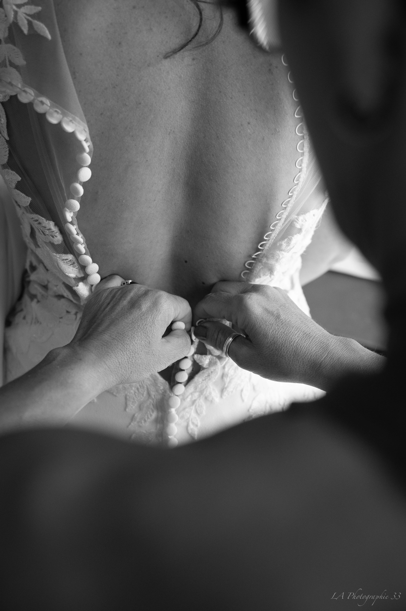
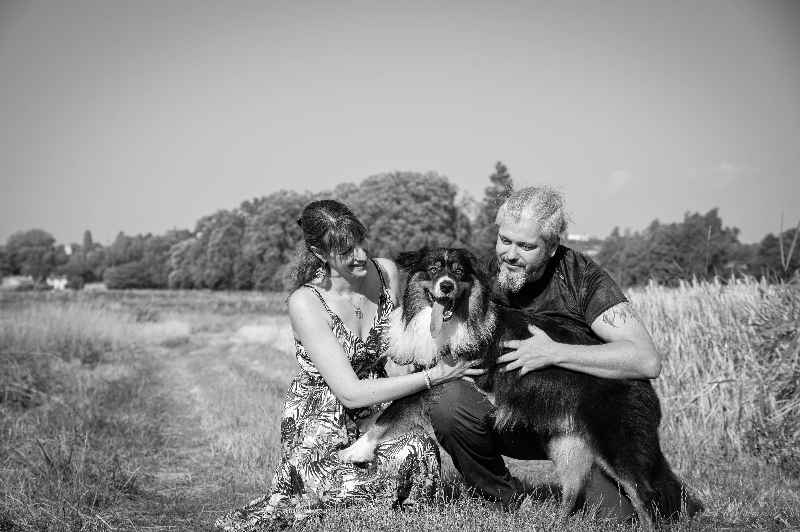
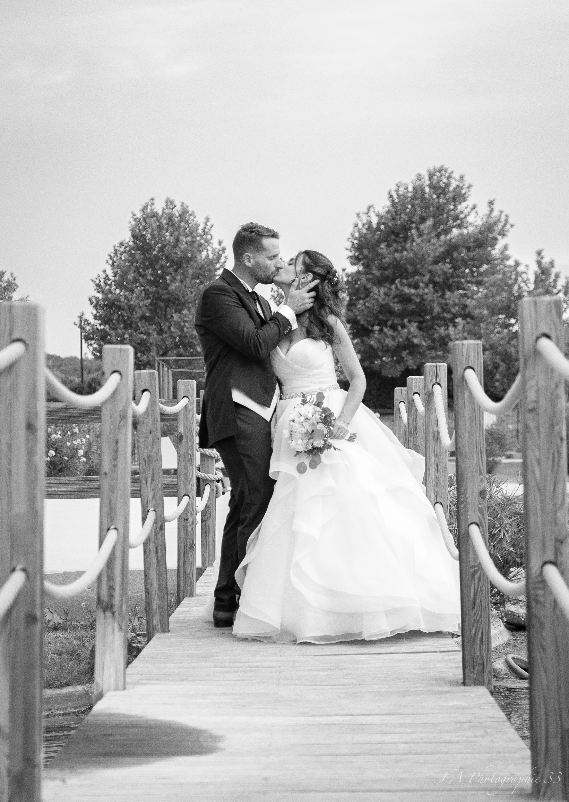

Mariages
Comment préparer sa séance photo de mariage ?
Tous mes conseils pour préparer votre mariage et vivre une expérience photo sereine et inoubliable.
3 Juin 2026 Lire l'articleDécouvrez mes inspirations et les coulisses de mon travail de photographe professionnel.

Tous mes conseils pour préparer votre mariage et vivre une expérience photo sereine et inoubliable.
3 Juin 2026 Lire l'article
Les garanties d'un travail de qualité et l'importance d'un regard artistique pour vos photos.
3 Juin 2026 Lire l'article
Lumière, timing, organisation : tous mes conseils pour des souvenirs inoubliables.
3 Juin 2026 Lire l'article